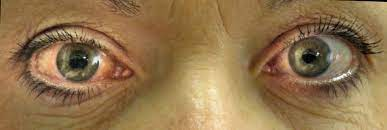

Glaucoma

SYMPTOMS:
Closed-angle glaucoma has more severe symptoms that tend to come on suddenly.
With any type, you may experience:
-
Eye pain or pressure.
-
Headaches.
-
Rainbow-colored halos around lights.
-
Low vision, blurred vision, narrowed vision (tunnel vision) or blind spots.
-
Nausea and vomiting.
-
Red eyes.
CAUSES
Glaucoma can occur without any cause, but is affected by many factors. The most important of which is the intraocular eye pressure. Your eyes produce a fluid called aqueous humor that nourishes them. This liquid flows through the pupil to the front of the eye. In a healthy eye, the fluid leaves through a drainage canal located between the iris and cornea.
With glaucoma, the drainage canals become clogged with microscopic deposits. The fluid has nowhere to go, so it builds up in the eye. This excess fluid puts pressure on the eye. Eventually, this elevated eye pressure can damage the optic nerve leading to glaucoma.
DIAGNOSIS
To check for glaucoma, your eye doctor may do one or more of these painless tests:
- Dilated eye exam to widen pupils and view the optic nerve at the back of the eyes.
-
Gonioscopy to examine the angle where the iris and cornea meet.
-
Optical coherence tomography (OCT) to look for changes in the optic nerve that may indicate glaucoma.
-
Ocular pressure test (tonometry) to measure eye pressure.
-
Pachymetry to measure corneal thickness.
Slit-lamp exam to examine the inside of the eye with a special microscope called a slit lamp.
-
Visual acuity test (eye charts) to check for vision loss.
-
Visual field test (perimetry) to check for changes in peripheral vision (your ability to see things off to the side).
TREATMENTS
Glaucoma treatments include:
- Eyedrops/Medication: Prescription eyedrops decrease fluids and increase drainage to alleviate eye pressure. There are many types of eyedrop medications that can be used for this condition. Because glaucoma is a lifelong condition, you may need to use daily eyedrops for life.
-
Laser treatment: Your eye doctor uses a laser (strong beam of light) to help improve fluid drainage from your eye. While the laser can complement the use of eye drops, it may not replace it completely. The results from laser treatments vary, but can last up to five years. Some laser treatments can also be repeated.
-
Surgery: Surgery is another way to help reduce eye pressure. It is more invasive but can also achieve better eye pressure control faster than drops or laser. Surgery can help slow down vision loss, but it can’t restore lost vision or cure glaucoma. There are many types of surgeries for glaucoma, and depending on the specific type and severity, your eye doctor may choose one over another.